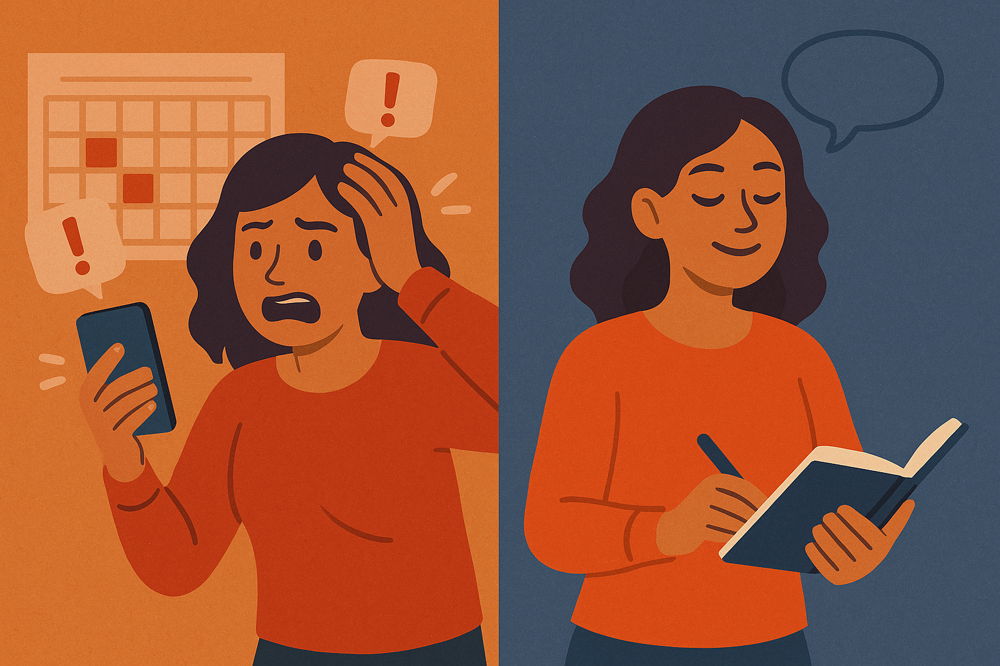

Taming the FOMO Monster: How Extroverted Women Can Find Joy (Yes, Joy!) in Missing Out
Published: March 30, 2025
Extroverted woman finding joy in missing out, practicing self-care instead of succumbing to FOMO.
Hey there, fellow social butterfly! If you're an extroverted woman, chances are you thrive on connection, buzz, and being where the action is. Your energy often ignites a room, and you draw vitality from interacting with others. It's a superpower! But like all superpowers, it can have a flip side, can't it? Enter the FOMO Monster – that nagging Fear Of Missing Out that whispers (or sometimes screams) that somewhere else, something more exciting is happening without you.
For many of us, this feeling is intense. The thought of missing a party, a networking event, or even just casual drinks can trigger genuine anxiety. But what if I told you that constantly chasing the next social high isn't sustainable and that learning to embrace missing out could unlock a new level of personal growth and actual joy? Yes, joy! This isn't about becoming a hermit; it's about reclaiming your time, energy, and peace. This guide is dedicated to coping with FOMO as an extrovert woman, exploring how to enjoy missing out as a female extrovert, and managing the fear of being left out as a sociable woman.
Understanding the Extrovert's FOMO: Why Does it Hit So Hard?
Extroversion isn't just about being talkative; it's often about how we recharge. While introverts tend to gain energy from solitude, extroverts often feel revitalized by social interaction. This fundamental wiring can make FOMO particularly potent:
- Energy Source: Social events feel like plugging into a charger. Missing out can feel like denying yourself essential energy.
- Validation & Connection: Being part of the group, sharing experiences, and feeling connected is deeply validating for many extroverts. Missing out can feel like a threat to those connections.
- Opportunity Cost: We often see social events as opportunities – to network, to learn, to laugh, to live. The fear isn't just missing fun; it's missing potential.
- Social Media Amplification: Platforms designed to showcase curated highlight reels constantly bombard us with images of what others are doing, pouring gasoline on the FOMO fire.
Recognizing why FOMO feels so strong for us is the first step in learning to manage it effectively. It's not a character flaw; it's intertwined with how we're energized.
The Hidden Costs of Never Missing Out
Always saying "yes" and constantly battling FOMO might feel like you're living life to the fullest, but it comes at a price:
- Burnout: Running from one event to another without downtime is physically and mentally exhausting, even for the most energetic extrovert.
- Surface-Level Connections: Rushing between social engagements can sometimes lead to many shallow interactions rather than fewer, deeper connections.
- Neglected Self-Care: When do you have time for rest, reflection, hobbies, or simply being when you're always doing? Personal growth often happens in the quiet spaces we deny ourselves.
- Loss of Authenticity: Are you saying yes because you genuinely want to go, or because you feel you should? Constantly overriding your own needs can lead to resentment and a disconnect from your true desires.
From FOMO to JOMO: Embracing the Joy of Missing Out
Here's the game-changer: shifting your perspective from FOMO (Fear Of Missing Out) to JOMO (Joy Of Missing Out).
JOMO isn't about negativity or isolation. It's the satisfying feeling that comes from intentionally choosing not to participate in something, allowing you to focus on what truly matters to you in that moment. It’s about:
- Intentionality: Making conscious choices about how you spend your precious time and energy.
- Recharging: Giving your extroverted self the necessary downtime to process, rest, and truly appreciate the social interactions you do choose.
- Self-Discovery: Using quiet time to explore hobbies, learn new things, reflect on your goals, and connect with yourself.
- Deeper Presence: When you do choose to attend social events, you're more likely to be fully present and engaged because you haven't stretched yourself too thin.
Contrast between stressed extrovert dealing with FOMO and calm extrovert embracing JOMO.
Actionable Strategies: How to Enjoy Missing Out (Yes, Really!)
Okay, theory is great, but how do we actually make this shift? Here are practical strategies specifically for extroverted women:
1. Identify Your FOMO Triggers (Know Thy Enemy)
Pay attention: What specific situations, people, or platforms trigger your FOMO the most?
- Is it seeing Instagram stories from a specific group?
- Is it hearing about plans you weren't invited to?
- Is it the thought of missing a particular type of event (e.g., concerts, networking)?
Understanding your triggers is crucial for managing the fear of being left out as a sociable woman. Once you know them, you can anticipate and consciously choose your response.
2. Reframe "Missing Out" as "Choosing In"
Shift your internal language. Instead of thinking, "I'm missing out on that party," try:
- "I'm choosing a quiet night in to recharge."
- "I'm choosing to invest time in my personal project."
- "I'm choosing deep rest so I can fully enjoy tomorrow's plans."
This reframing empowers you, making it an active choice rather than a passive loss.
3. Schedule "Me-Time" Like a VIP Event
Extroverts often undervalue solo time. Treat your "me-time" with the same importance you'd give a major social engagement.
- Block it out in your calendar.
- Make it non-negotiable.
- Plan something you genuinely look forward to during this time – a luxurious bath, reading a novel, working on a creative hobby, watching a movie guilt-free. This is key to learning how to enjoy missing out as a female extrovert.
4. Practice Mindful Decision-Making Before Saying "Yes"
Pause before automatically agreeing to an invitation. Ask yourself:
- Desire: Do I genuinely want to go, or do I feel obligated?
- Energy: Do I realistically have the mental and physical energy for this?
- Value: What will I gain from this? What will I sacrifice (e.g., sleep, quiet time)?
- Alternatives: What else could I do with this time that might serve me better right now?
This pause helps break the automatic "yes" reflex driven by FOMO.
5. Curate Your Social Media Feed Ruthlessly
Social media is a FOMO factory. Take control:
- Mute/Unfollow: Don't hesitate to mute accounts or people whose posts consistently trigger your FOMO without adding value to your life.
- Limit Exposure: Set time limits for social media apps. Avoid scrolling right before bed or first thing in the morning.
- Remember the Highlight Reel: Remind yourself that you're seeing curated moments, not the full picture of anyone's life.
6. Discover Solo Activities You Genuinely Love
Make alone time appealing! Explore activities that energize or relax you, even without others present.
- Learning: Online courses, documentaries, podcasts.
- Creating: Painting, writing, coding, crafting, cooking complex recipes.
- Moving: Solo hikes, dancing in your living room, yoga.
- Exploring: Visiting a museum, Browse a bookstore, exploring a new neighborhood park.
Finding joy in solitude is a powerful antidote to FOMO.
7. Communicate Your Needs (Gently but Firmly)
It's okay to let friends know you need downtime. You don't need elaborate excuses.
- "Thanks so much for the invite! I'm going to sit this one out as I really need a quiet evening, but let's catch up soon!"
- "Sounds amazing! I can't make it tonight, but definitely keep me in mind for the next one!"
True friends will understand your need for balance. This proactive communication aids in coping with FOMO as an extrovert woman by managing others' expectations and reducing potential guilt.
8. Celebrate the Small Joys of Staying In
Actively appreciate the upsides of your choice:
- The comfort of your PJs.
- Not having to make small talk.
- Saving money.
- Getting extra sleep.
- The peace and quiet.
Focusing on the immediate benefits reinforces the positive aspects of JOMO.
Embracing Imperfection: The Journey to JOMO
Listen, taming the FOMO monster isn't an overnight fix. There will be times when that fear creeps back in, especially when you see amazing photos pop up online. That's okay!
The goal isn't to never feel FOMO again. The goal is to recognize it, understand it, and have the tools to choose your response consciously. It's about progress, not perfection. It’s about building a life where your social energy enhances your well-being rather than dictates it. Managing the fear of being left out as a sociable woman is an ongoing practice of self-awareness and self-compassion.
Conclusion: Your Energy, Your Choice
As an extroverted woman, your ability to connect and draw energy from social interaction is a gift. But true self-care and personal growth involve learning to balance that outward energy with inward nourishment. By understanding your FOMO, reframing your perspective, and implementing practical strategies, you can move towards the genuine Joy Of Missing Out.
Learning how to enjoy missing out as a female extrovert isn't about diminishing your sparkle; it's about protecting it. It's about ensuring you have the energy and presence to shine brightly when you choose to be out and about, and the peace and contentment to thrive when you choose to stay in. Start small, be patient with yourself, and discover the unexpected joy waiting in the moments you purposefully miss.
What are your biggest FOMO triggers? Share your experiences or tips for finding JOMO in the comments below!